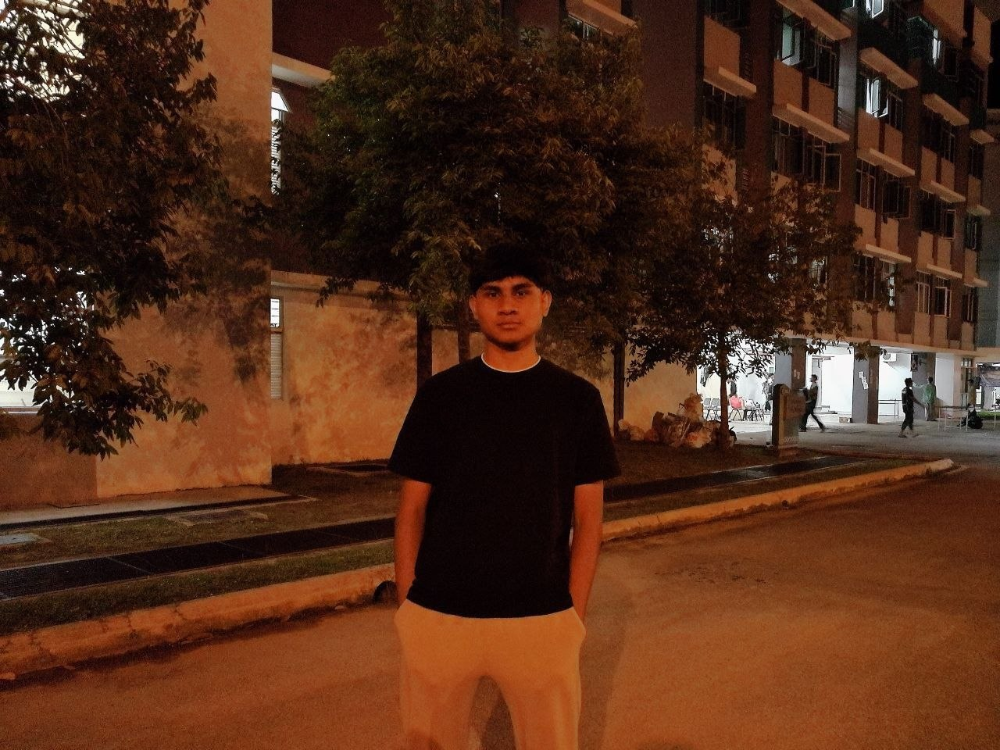
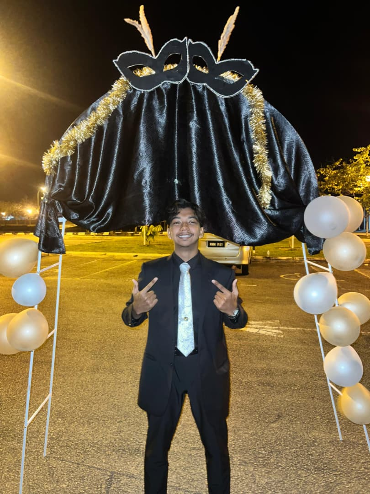
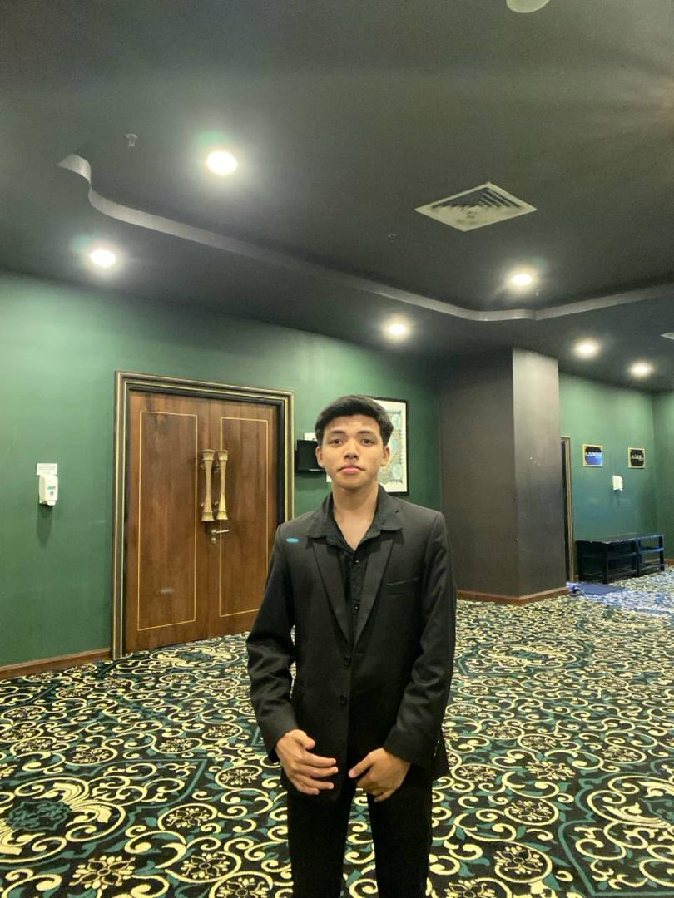

Meet Our Team
The innovative minds behind WOWClinicFinder working together to bridge the gap between patients and healthcare providers.

Adam Luqman
Project LeaderFull name: Adam Luqman bin Hasmawi
Matric number: 250114
IG: @lqmnhsmw
Job scope: Project management and strategic planning
Ammar Zafran
Lead DeveloperFull name: Ammar Zafran bin Mohd Khairi
Matric number: 251083
IG: @ammr_.zfrnz
Job scope: Backend development and system architecture

Adam Iskandar
UI/UX DesignerFull name: Adam Iskandar bin Shaffiq Sangger
Matric number: 250113
IG: @adam.isz
Job scope: UI/UX design and user experience optimization

Amr Fathy
Healthcare Data AnalystFull name: Ahmad Amr Fathy bin Ahmad Hilal
Matric number: 250301
IG: @amrulaaaa
Job scope: Healthcare data analysis and reporting